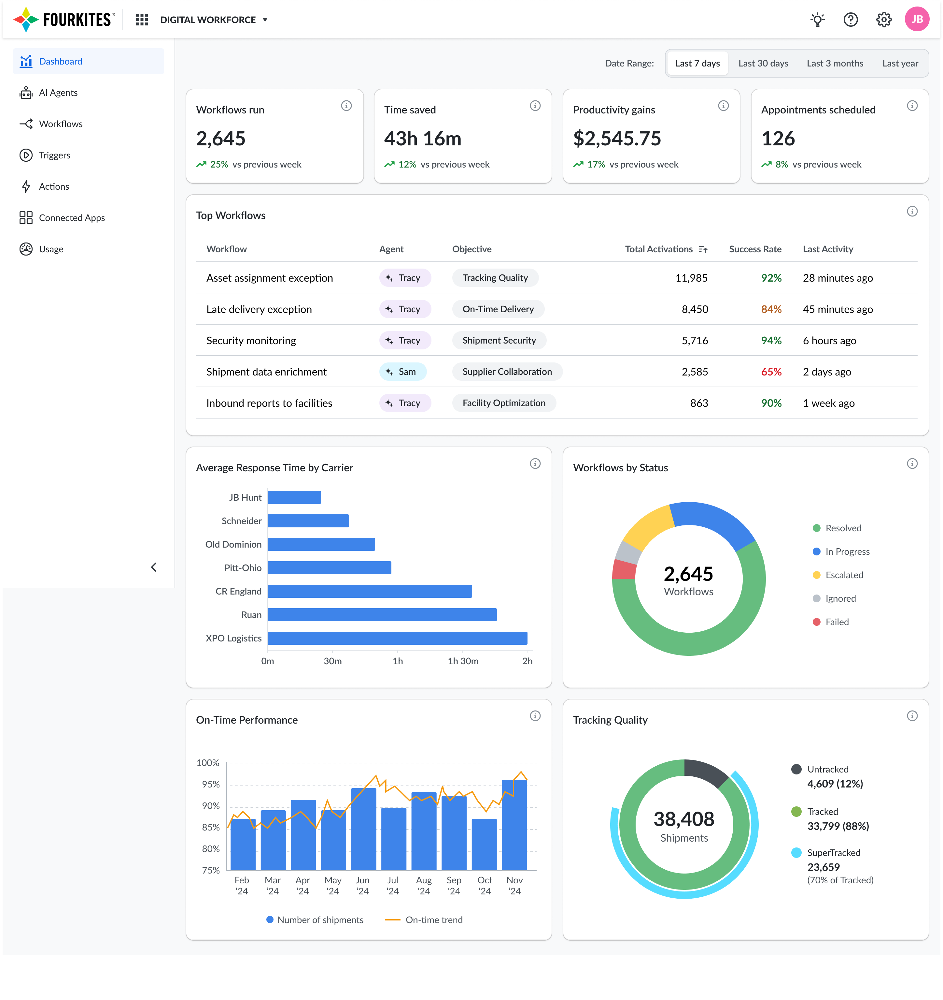

Digital Workforce: AI Agents for Supply Chain Ops
Design strategy for four AI agents — Tracy, Sam, Alan, and Polly — that cut manual workload 50% and lifted enterprise adoption to 85% in six months.
Director of User Experience · Strategy to Launch
The challenge
Supply chain teams were spending 15–20 hours a week on repetitive manual tasks — document collection, appointment scheduling, carrier coordination — and enterprise customers couldn't scale operations without scaling headcount right alongside them. Customer research pointed to a specific insight: 87% of supply chain inefficiencies came from communication gaps that AI could augment, not tasks that AI needed to fully replace.
Strategic vision
I led design strategy for a suite of four AI agents built around one principle — elevate humans to strategic work rather than replace them, with agents designed to feel like trusted team members rather than black boxes. Every agent had to work for enterprises with wildly different levels of technical sophistication, so trust, transparency, and configurability became the non-negotiable design pillars: configurable UI frameworks let each enterprise adapt tone, SLAs, and escalation rules to their own culture, and auditing/monitoring dashboards built the confidence needed for teams to actually hand off work to automation.

The four agents
Tracy (Track & Trace Specialist) automates shipment visibility and carrier compliance — improved tracking quality 20% in four weeks and saved managers 2–3 hours a day, through bi-directional carrier communication and transparency dashboards. Sam (Supplier Collaboration Expert) automates supplier onboarding and document processing, cutting onboarding from months to days via conversational interfaces and real-time validation. Alan (Appointment Scheduling Assistant) automates end-to-end scheduling and rescheduling across email, portals, and TMS, cutting scheduling workload 50%. Polly (Document Compliance Manager) automates proof-of-delivery collection and matching, cutting manual effort 15–20 hours a week through trust-building, escalation-transparent workflows.

Impact
Across the suite, manual task time dropped from 20 hours a week to 2, tracking accuracy rose from 72% to 94%, and document compliance rose from 65% to 94% — driving over $15M in customer value and a 3x increase in enterprise deal size within six months of launch.
"Tracy brought agility to our teams... like augmenting FourKites visibility with an additional pair of eyes 24/7." — Mohammed Mirza, Unilever
"This enabled us to focus on higher value activities rather than chasing emails." — Annabelle Torres, Smithfield Foods